CSCE 242 Web Applications
Web technologies to support client-server computing. Implementation of client-server applications.
My Repo
Assignments
Basic HTML
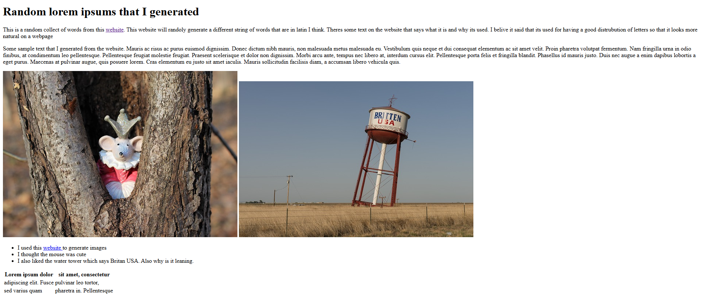
The basic HTML assignment that has two images and some text and headers. Does not incorperate css at all
Basic CSS
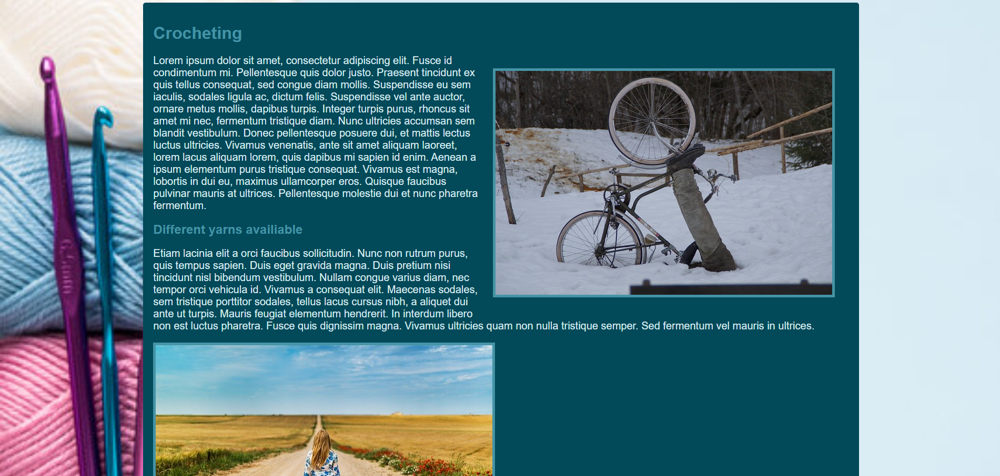
The basic CSS assignment with two images, a background image, some text, and a table. This assignment was the first that incorperated css
Page layout
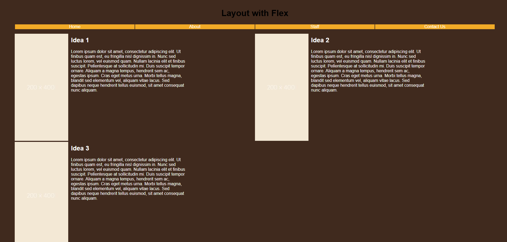
A basic css assignment in which you had to use flexbox and flex-wrap along with serveral images and text. This website was made to be mobile friendly
Page layout
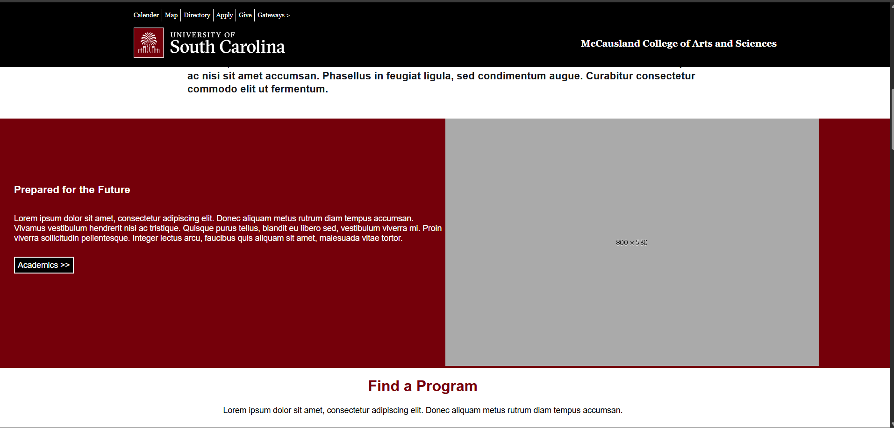
Recreation of the USC page for the college of arts and sciences. This page uses many differnt css elements. This also uses positions to make a bar at the top
Basic Javasript
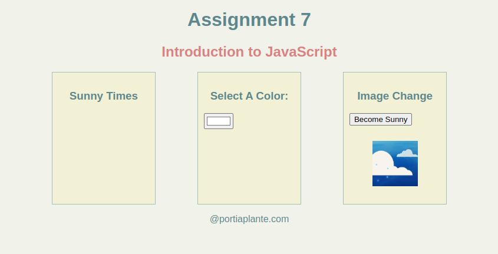
Basic Javascript that makes text appear. It also changes the color of text, and replaces the src of an image
Javascript conditionals
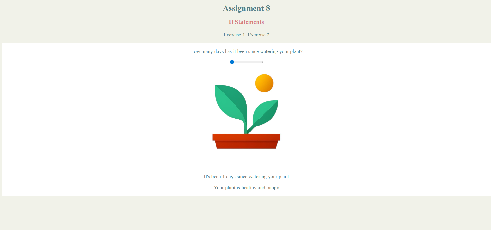
Javascript that uses conditional statements to change the status of things based on the users input. Has plants and time
Javascript if statements
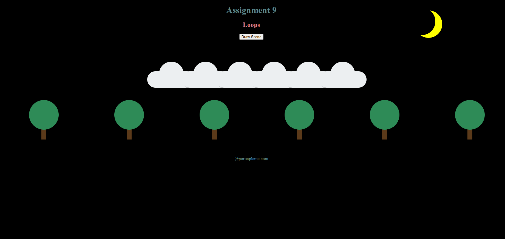
Javascript that will display a night screen if at night and a day screen if day. Will also display 6 clouds and 6 trees when a button is pressed
Javascript arrays
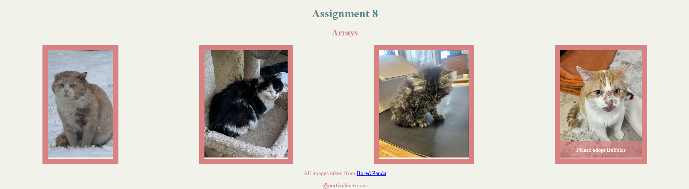
Javascript that will display 4 different cats and when they are hovered over will show their names. If pressed will show you a picture after they are adopted
Javascript arrays
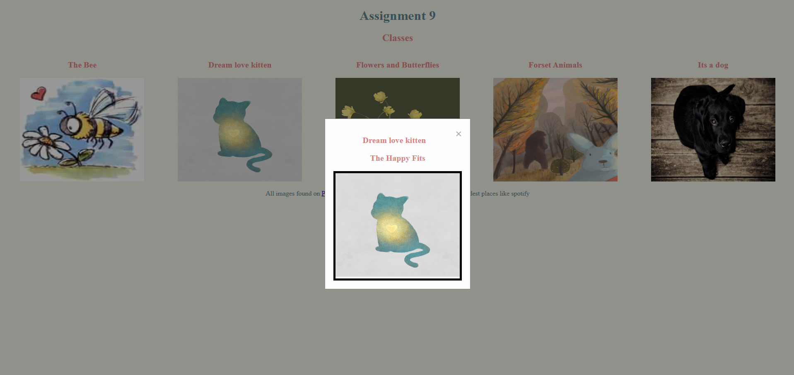
Javascript that will display 5 different images and when clicked will show a modal that displays the same info along with the author. Some also have borders
Projects
pdf of idea Project 1
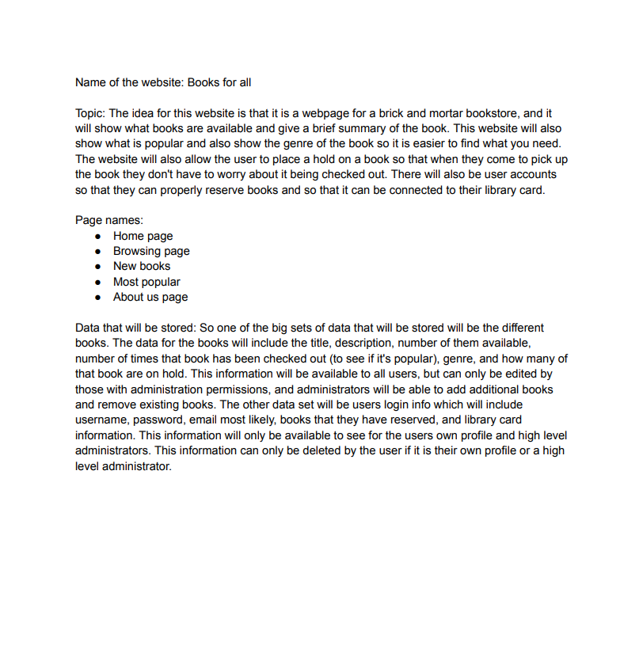
A pdf file of the ideas that I had for a webpage. Details some of the differnt webpages that would be avaliable to visit
Wireframe Project 2
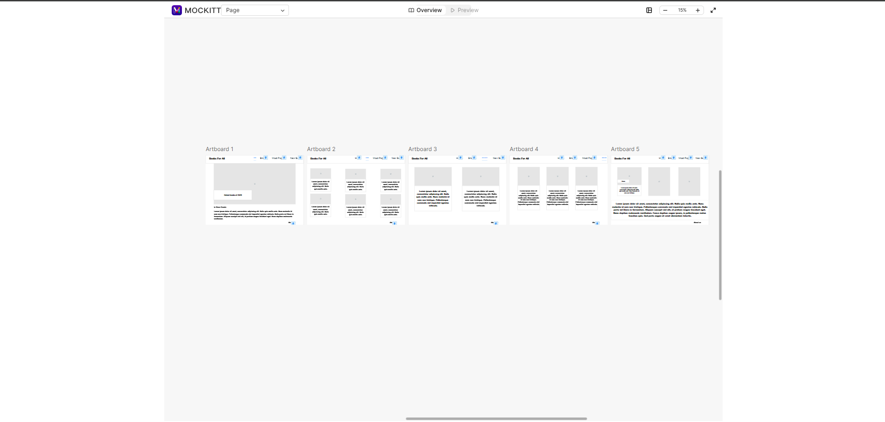
A wireframe for a future project for CSCE 242. Shows five differnt webpages and allows you to navigate to different pages
HTML and CSS Project 3
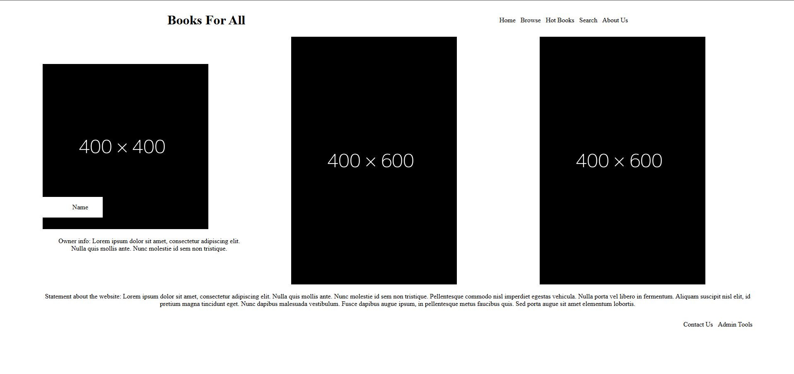
A very basic HTML and CSS page for my future project. Has 8 different pages and is in black and white. It is very barebones at the moment with plans to add more in the future.
HTML and CSS Project 3
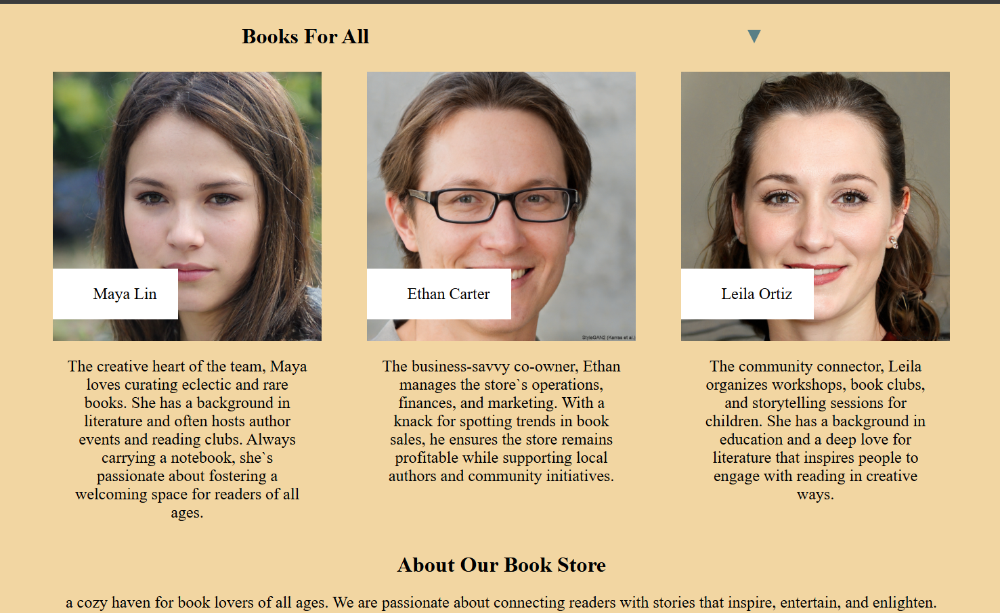
The website with actual images and text. Formated to look prettier and now has additional content with it as well.
HTML and CSS Project 4
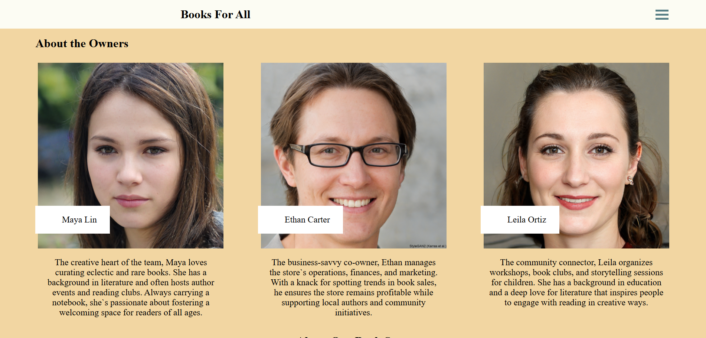
The website with actual images and text, now with fixes from feeback. Minor tweeks and changes to make the website look better.
HTML and CSS Project 5
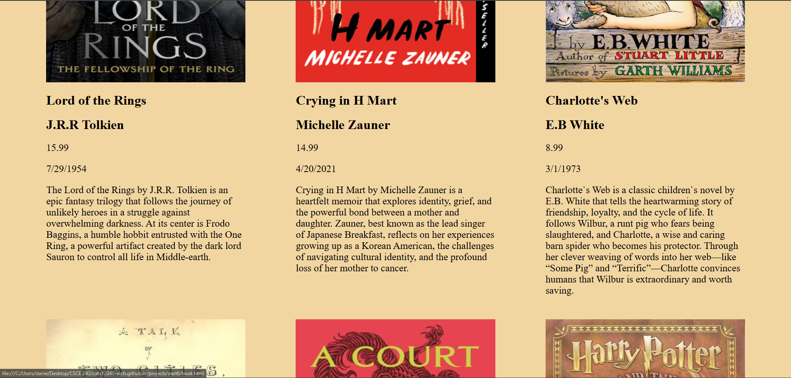
Added JSON to the website to load a bunch of images in the browse tab of the website, I also made minor changes around the website as well.